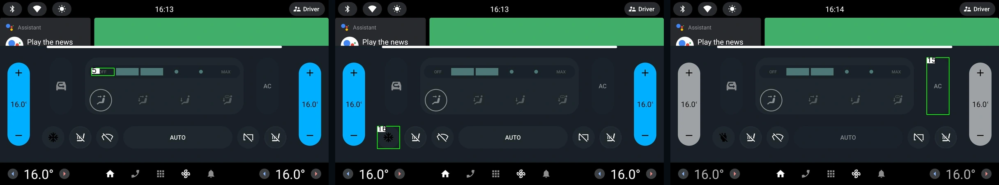
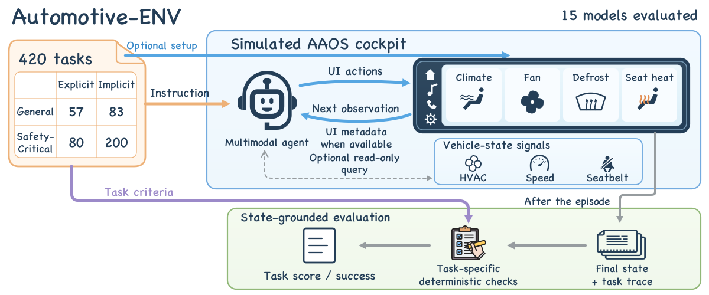
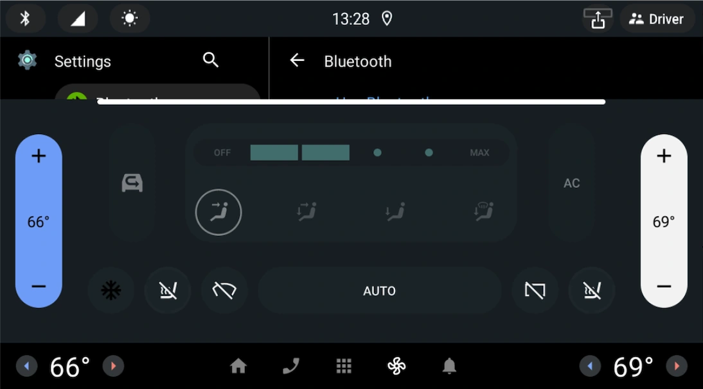
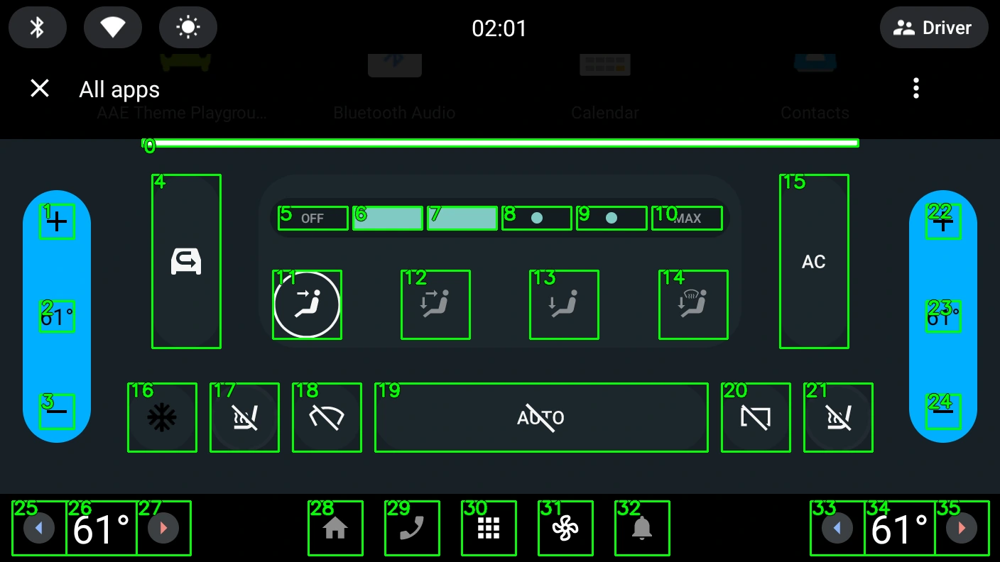
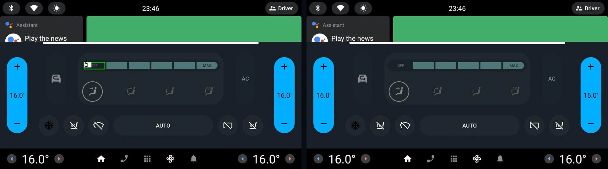
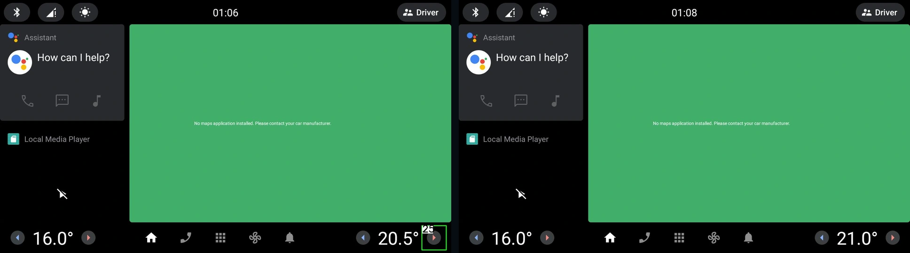

Swipe to explore the frames ↔ NEURIPS 2026 ACCEPTED PAPER
Beyond the interface.
Into the cockpit.
Automotive-ENV: Benchmarking Multimodal Models
in Automotive Cockpit Environments
Australian Artificial Intelligence Institute / University of Liverpool * Equal contribution
ENTER THE ENVIRONMENTAI-generated concept visualization
420Validated tasks
15Evaluated models
4Task subsets
AAOSAndroid Automotive OS
01 / INSIDE AUTOMOTIVE-ENV
The cockpit, connected.

02 / THE ENVIRONMENT
A cockpit you can interact with.
Screens. Vehicle signals. Real interaction.
01 COCKPIT SCREEN

02 VISUAL GROUNDING

Recorded simulator footage and screenshots. No physical vehicle is operated.
03 / FOUR TASK SUBSETS
420 tasks.
Four kinds of understanding.
DIRECT CONTROLILLUSTRATIVE TASK
“Turn on the front defroster.”
The requested control must reach its target state.
ANDROID AUTOMOTIVE OSCOCKPIT INTERFACE
Actual AAOS screen · task illustration
140 GENERAL TASKS280 SAFETY-CRITICAL TASKS
04 / WHAT THE RESULTS REVEAL
The safety gap.
KIMI-K2.5 · SUCCESS RATESame model.
Task-count-weighted success rate (%)
Same model.
Different demands.
Task-count-weighted success rate (%)GENERAL64.2%
SAFETY-CRITICAL33.8%
Explore the benchmark
Success rate (%) · higher is better
General Explicit · 57 tasksSUCCESS RATE
Human reference 5 participants93.3%
Top six models · human reference: five participants
Full results · all 15 models
| Model | Serving | General Explicit | General Implicit | Safety Explicit | Safety Implicit |
|---|---|---|---|---|---|
| Gemini 3 Flash | API | 45.6 | 47.1 | 26.9 | 37.0 |
| Kimi-K2.5 | API | 75.8 | 56.3 | 29.7 | 35.4 |
| Qwen3.5-122B-A10B | API | 70.5 | 52.2 | 16.7 | 28.4 |
| Qwen2.5-VL-3B | Local | 13.6 | 11.5 | 7.3 | 12.4 |
| Qwen2.5-VL-7B | Local | 26.5 | 17.2 | 8.8 | 12.1 |
| Qwen3-VL-8B | Local | 43.7 | 39.4 | 21.3 | 24.0 |
| MAI-UI-2B | Local | 20.0 | 14.2 | 12.9 | 15.6 |
| MAI-UI-8B | Local | 27.3 | 32.4 | 16.7 | 19.8 |
| MiMo-VL-7B-RL | Local | 37.4 | 22.7 | 12.3 | 15.4 |
| OpenCUA-7B | Local | 12.1 | 17.7 | 5.7 | 8.3 |
| UI-TARS-2B-SFT | Local | 16.7 | 17.4 | 17.1 | 9.9 |
| UI-TARS-7B-DPO | Local | 13.6 | 18.6 | 15.2 | 16.5 |
| JEDI-3B | Local | 16.7 | 8.2 | 6.1 | 9.4 |
| JEDI-7B | Local | 25.2 | 21.1 | 7.6 | 9.5 |
| GUI-Owl-7B | Local | 9.8 | 21.5 | 21.3 | 17.0 |
10-step limit · task success excludes runtime
05 / OBSERVED FAILURES
See where understanding breaks.
Actual trajectories from the paper.

Swipe to explore the frames ↔03
IMPLICIT INTENT
The wrong kind of warmth.
Cabin temperature raised. Seat heating stays off.
Full case ↗
Swipe to explore the frames ↔Cite the paper
CITE THE ARXIV PREPRINT
@misc{yan2025automotiveenvbenchmarkingmultimodalagents,
title={Automotive-ENV: Benchmarking Multimodal
Agents in Vehicle Interface Systems},
author={Junfeng Yan and Biao Wu and
Meng Fang and Ling Chen},
year={2025},
eprint={2509.21143},
archivePrefix={arXiv},
primaryClass={cs.RO},
url={https://arxiv.org/abs/2509.21143}
}The arXiv citation retains its original title and year.